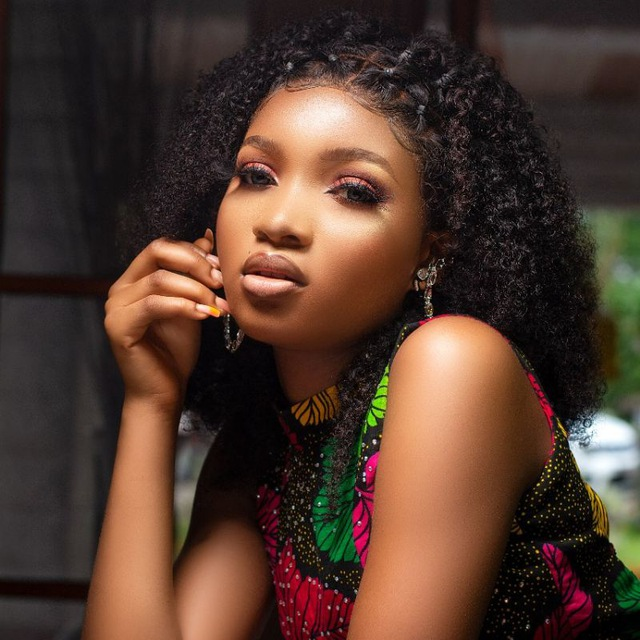

About Me
Welcome to my world! You could say that I'm a combination of my mother and father; I have a great sense of humor- I try to find the humor in just about everything I do. I am an exceptional daughter. Oh, yes, I am. I am kind and considerate. My parents are exceptional, so I try to live up to their standards. I love animals. My favorite animals are cats, dogs, lions. I'm sensitive. I used to think my sensitivity was a weakness, something to hide. But it is not. My sensitivity means I care about what people think of me and I strive to be a better person. It means I take on other's problems as if they are my own and their pain is my pain. It means I am in tune with my emotions and more cautious about what to say because I understand how much words can hurt or heal.
My hobbies include: singing, but I don't think I have a good voice. I love listening to music a lot, I love dancing, I love traveling-exploring new places, I have plans of traveling round the world. New culture tastes good to me. I play games/sports. The favourite sport is volleyball. I also love cooking especially African dishes. I love spending time with myself, and spending quality time with friends and family. I love taking photographs and making videos too. I love working out. I am open to new ideas and I love learning something new.